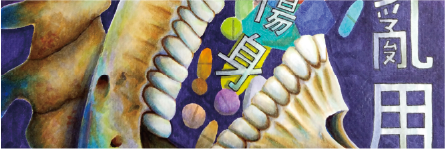

關於我
基本資料
姓名：楊，筱君 YANG，HSIAO-CHUH
研究專長：設計思考、繪畫設計、平面設計、邏輯思考
聯絡信箱：4B01D091@stust.edu.tw
聯繫電話：0980877166
聯絡地址：台南市佳里區海澄里9鄰134號
關於我
目前就讀南臺科大，視傳系商業設計組，之前是學廣告設計科的，接觸比較多的就是麥克筆，這是個讓我發揮很多繪畫技法的媒材，色彩敏感的我，藉由麥克筆我描繪出想要的色彩，一件物品我可以渲染、疊加多種顏色，使我的圖用色豐富，在技法上，可以表現出具有速度感、金屬感、紋理的表現(木紋)、以及水的質感，利用麥克筆墨水乾的速度，在繪圖上的時間縮短，得以迅速完成作品。
現在有些學習的跟之前的差不多，我比較擅長對於事物的發想，像是做一些事情時需要想很多，考慮多種可能性，去想很多的面向，有助於幫助我事情進度加快進行。
我覺得從以前學習到現在，所擁有的特質有，在與人相處時我能適時的察言觀色，避免給人留下不好的印象，待人也會保持友好的態度，以禮待人。我認為我是有禮貌的人，會去尊重他人，當別人反饋給我不好的地方時，我會記得且改進；做事情也會小心謹慎，會想要把這份工作做到最好，在某些情況下，動作有時雖會較慢，但我會記得下次要再加快些，盡量完美努力的去完成，不愧對自己。當完成一項事情的時候，心情是非常的愉悅；我是一個內向、抗壓性極好的人，很多時候雖不太敢自我表達，但隨著與他人相處，總能會建立自信，並透過多與人接觸的模式進而從他人身上吸取優點，學到更多我所不會的能力。
很多東西我都還要去學習精進，目前正在提升自我，多去學習參與累積經驗，學習新事物對我來說非常有趣，因為會感到喜悅，喜悅的是我又了解新的知識，之後就可以學以致用，也樂於接受別人的指教，別人的反饋，可以使我去反思，而後調整我的一些狀態，讓自我的能力變好。
技能
Adobe Illustrator
Adobe Photoshop
PPT
Word
學歷
1.2009/9-2015/6 延平國小
2.2015/9-2018/6 佳里國中
3.2018/9-2021/6 曾文家商 廣告設計科
經歷
學校幹部：學藝股長、輔導股長。
學校社團：日文社、韓文社、足球社。
學術專長領域（能力）
我的專長有設計思考、繪畫設計、平面設計、邏輯思考等，以上將詳述至下列：
1.設計思考：對事物進行聯想，多去延伸多種可能，以樹狀圖下去發展，以利事情發想、建構，分析事物多種層面，為各種議題尋求創新解決方案，並創造更多的可能性。
2.繪畫設計：結合設計思考，去思考所需元素，進行合理美觀性拼湊，來完成這項作業，搭配繪畫手法，提升作項目品質，融入自我思想，傳達所想感受。
3.平面設計：利用AI、PS等軟體完成設計，處理所要素材，進行作業製作，編排多種形式，可慮合理性，利用軟體便捷功能，達到所要的效果，將想像呈現實體化。
4.邏輯思考：清楚表達想法較容易說服他人，能在腦中清晰分析思考事情，並將想法說出，明確的表達所想。
作品集
哈士奇
雞
魚狗
魚鳥戀
星空
餓鬼
反毒

化石
聯絡我
聯繫電話：0980877166
聯絡信箱：4B01D091@stust.edu.tw
聯絡地址：台南市佳里區海澄里9鄰134號
哈士奇
媒材：炭精筆
尺寸：A4
說明：在黑色紙上臨摹了一隻哈士奇。要先把狗的型打稿準確，才不會讓整體畫完感覺這隻狗有所變型，使用的是白色的筆，有點像是在畫素描的感覺，因為是畫動物，要注意表現出毛流感，明暗的部分也要準確的畫出。
雞
媒材：麥克筆
尺寸：B5
說明：臨摹一隻雞，在技法的運用上，特意強調眼部的部分，使眼睛看起來炯炯有神，羽毛的處理部分，則是用各種色疊加，再去用暗色強調羽流感，深色背景更能凸顯整這隻雞，再用炭精筆，撇出一些毛流感，使其完整。
魚狗
媒材：麥克筆
尺寸：A4
說明：臨摹一隻名為魚狗的鳥，魚狗是普通翠鳥的別稱。因其常直挺地停息在近水的低枝或岩石上，伺機捕食魚蝦等，因而又有魚虎、魚狗之稱。自額至枕藍黑色，密雜以翠藍橫斑，背部輝翠藍色，腹部慄棕色；頭頂有淺色橫斑；嘴和腳均為赤紅色。
魚鳥戀
媒材：麥克筆
尺寸：25*25CM
說明：魚跟鳥之間的一段愛戀，物種不同的他們，不會因為這個而受到限制，他們還是能夠互相的彼此相愛，為了表達他們純純的愛，在色彩的運用上使用的非常柔和的感覺，想要營造他們之間所散發的戀愛氛圍。
哈士奇
媒材：麥克筆
尺寸：23*23CM
說明：這是一隻在外流浪而思念家鄉的狼，為了想去看更多，而決定離開了原本的地方，出門去別的地方流浪，順便體驗其他地方的美麗，探索世界，看見大大小小的事物，當看到這片星空，不禁想起，家鄉漂亮的星空。
餓鬼
COPIC第四屆台灣ACG原創插畫大賽-2019 (未得獎)
媒材：麥克筆
尺寸：A3
說明：以腐爛的身體呈現餓到發爛，有的部分還露出了白骨，加上點破碎的布，更有身體破敗的感覺，全身發爛到以致長蛆，蛆在全身各個部位，大大的腦袋，則是累積屍水膨脹，也因為煩惱沒得吃，搞到頭昏腦脹，長出了大大小小的瘤。
反毒
反毒創意海報標語-2021 (第三名)
媒材：麥克筆
尺寸：A4
說明：以禁止藥物亂用跟反毒結合做發想，思考兩者所能連結的元素，流動的藥物代表一直不停吃下的藥，吃到嘴中，毒害自己，暈頭轉向而倒過來的骷髏所延伸出的毒，有反毒的意味，整體想表達出，吃毒藥之後的變化。
化石
學生美展-2020 (未得獎)
程式：AI
尺寸：A4
說明：化石，化指的是被溫室效應所受影響的動物們，他們的生命就像冰山那樣，漸漸地融化，走向滅亡，文字的表現是以冰塊的質感帶點融化感；石指的是那些慢慢走向滅絕的動物們就跟恐龍一樣，走向歷史，成為石，文字的表現，像是在冰裡的石骨般，被挖掘發現的感覺。表現的方式用冰雕形式的企鵝、海豹、北極熊站在漂浮海上的碎冰面，海面上也會有其他的碎冰漂浮著，並且做出身體漸漸的溶化，顯露出身體一部份的骨頭，骨頭的部分帶有點不是那麼寫實的，而是比較簡約可愛的，感覺會沒那麼的驚悚，讓我們觀看的人能夠更加愛護他們，也能夠清楚意識到地球暖化的嚴重性，提倡愛護地球的重要性。